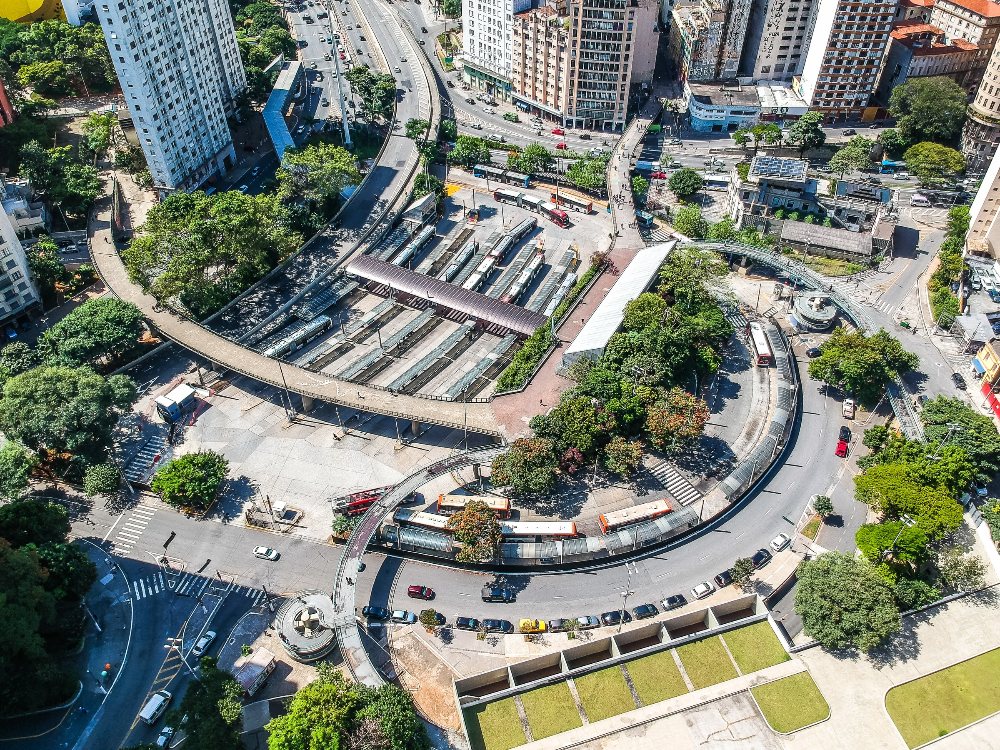

우리가 내린 스마트 도시계획의 정의는 막대한 비용이 드는 거대한 프로젝트를 진행하기에 앞서 도시 및 시민들이 필요로 하는 시설을 먼저 갖추어 나가며 점진적으로 완성형의 스마트 시티를 만들어 나가는 것이다. 즉, 도시와 시민들의 문제점 및 니즈를 파악하고, 이를 해결하기 위한 기획 및 실행 그리고 관리·운영까지 통합적으로 생각한 시민 체감형 계획인 것이다.
4차 산업혁명 시대에는 첨단 기업을 육성하고, 인재를 양성하는 산·학·연 클러스터를 형성하는 것이 중요시 된다. 이에 따른 도시 계획은 고급 인력들의 접근성 확대를 위해 좋은 삶의 질을 제공해주는 방향으로 이루어져야한다. 결론적으로 스마트시티로 가는 지름길은 질 좋은 주거 환경 · 공공시설 및 서비스 · 녹지 등이 잘 갖춰진 “좋은 도시”를 형성하는 데에 있다. 삶을 영위하는데 기술이 사람보다 중요할 수 없는 만큼 서비스와 환경, 휴머니즘의 스마트시티를 지향한다.